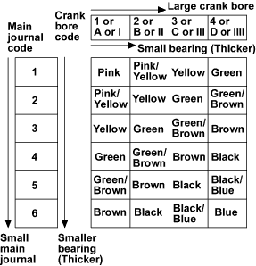
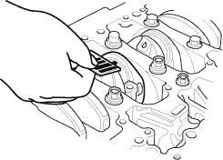

- Use the crank bore codes and crank journal codes to select the appropriate replacement bearings from the following table.
NOTE:
- Colour code is on the edge of the bearing.
- When using bearing halves of different colours, it does not matter which colour is used in the top or bottom.


Rod Bearing Clearance Inspection
- Remove the oil pump (see page 8-11).
- Remove the baffle plate (see step 6 on page 7-13).
- Remove the connecting rod cap and bearing half.
- Clean the crankshaft rod journal and bearing half with a clean shop towel.
- Place plastigage across the rod journal.
- Reinstall the bearing half and cap, and torque the bolts to 29Nm (3.0 kgf/m, 22 lbf/ft) + 90
°NOTE: Do not rotate the crankshaft during inspection.
- Remove the rod cap and bearing half, and measure the widest part of the plastigage.
Connecting Rod Bearing-to-Journal Oil
Clearance:
Standard (New):
0.033 - 0.061 mm
(0.0013 - 0.0024 in.)
Service Limit:
0.072 mm (0.0028 in.)
